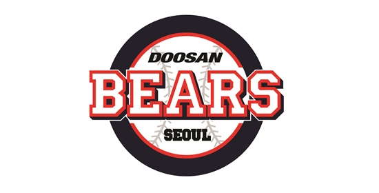

DooSan Bears
1982년 원년우승
1995년 V2
2001년 V3
두산 Story
두런두런
2.0
BearSpotv베어스포티비 바로가기
두산베어스 1군 코칭스태프 소개
감독 및 코치
88 김태형 감독
86 강석천 수석코치
70 김원형 투수코치
71 이도형 타격코치
75 조인성 배터리코치
79 김민재 작전 및 주루 코치
90 고영민 주루코리
25 배영수 투수코치2
101 이병국 트레이닝코치
103 천종민 트레이닝코치
